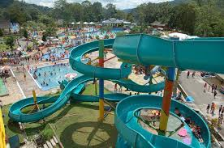
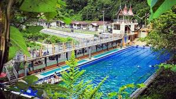

Destinasi Wisata Populer
Mifan Lake
Mifan (Minang Fantasi) Water Park & Resort adalah taman bermain yang terdapat di Kota Padang Panjang, Sumatra Barat, Indonesia. Menempati lokasi di kawasan Perkampungan Minangkabau Village, Mifan berada dalam satu kompleks dengan Pusat Dokumentasi dan Informasi Kebudayaan Minangkabau (PDIKM). Minangkabau Village sendiri merupakan sebuah lokasi yang menampilkan bangunan replika dari rumah adat Minangkabau. Mifan mulai dibangun pada pertengahan 2006 di atas lahan seluas 9,8 hektare dan mulai dibuka untuk umum pada Juli 2008. Peresmian Mifan dilakukan pada Oktober 2008 oleh Wali Kota Suir Syam. Pembukaan Mifan menandai meningkatnya kunjungan wisatawan sekaligus menyumbang sektor pendapatan kota.
Lubuk Mata Kucing
Air terjun alami yang menyegarkan dan cocok untuk berenang.Lubuk Mata Kucing adalah sebuah tempat pemandian umum yang populer dengan airnya yang sangat jernih seperti mata kucing, begituah pendapat dari orang-orang sekitar. Pemandian yang dibangun sejak zaman penjajahan Belanda, sekitar tahun 1918 dan masih ada sampai sekarang. Bagi masyarakat Padang Panjang Lubuk Mata Kucing sudah tidak asing lagi tentunya. Karena Lubuk Mata Kucing menjadi salah satu destinasi yang menarik yang sering dikunjungi para wisatawan. Berlokasi di Kelurahan Pasar Usang, Kecamatan Padang Panjang Barat, . .
Masjid Asasi
Masjid bersejarah dengan arsitektur yang menawan.Masjid Asasi (awalnya bernama Surau Gadang)[3] terletak di Kelurahan Sigando, Kota Padang Panjang, Sumatera Barat. Masjid ini diperkirakan berdiri sejak abad ke-17 dan tercatat sebagai masjid tertua di Padangpanjang. Arsitekturnya mengikuti bentuk masjid tradisional Minangkabau.
taman pensil
taman yang indah dan cocok untuk bersantai Padang Panjang, Padangkita.com - Pemeritah Kota Padang Panjang membangun Taman Ramah Anak Lembuti yang di depan kantor Kapolres Padang Panjang. Taman bermain untuk anak-anak ini telah ramai dikunjungi oleh masyarakat sekitar.
PDIKM
Kebudayaan Minangkabau atau biasa disingkat PDIKM adalah salah satu museum di Sumatra Barat yang terletak di Kelurahan Silaing Bawah, Kecamatan Padang Panjang Barat, Kota Padang Panjang. Museum ini bersisikan berbagai macam informasi dan koleksi mengenai kebudayaan Minangkabau baik berupa dokumentasi audio maupun visual. Museum ini dapat diakses dari jalur utama Padang–Bukittinggi, berjarak sekitar lebih kurang dua kilometer dari pusat Kota Padang Panjang.
lubuak soda
"Cerita singkat tentang Wisata Alam Pamandian Lubuak Soda. Assalamualaikum ww..!! Lubuak Soda adalah salah satu objek wisata yang terletak di Jorong Mudiak Aie ,Nagari Tambangan Kec X Koto Kab Tanah Datar SUMBAR. Awal terciptanya Lubuak Soda di... Lebih banyak
mega mendung
TWA Mega Mendung merupakan tempat wisata keluarga bernuasa alami. Terdapat sekitar empat pemandian destinasi wisata air di sepanjang jalan lintas Silaing ini. Tidak sedikit keluarga yang memilih TWA ini sebagai salah satu tempat wisata untuk liburan bersama anak-anak. Di samping keindahan dan kesejukan, juga biaya untuk masuk tempat pemandian ini hanya dikenakan biaya parkir masuk mobil.
BCL
Bancah Laweh yang terkenal dengan lapangan pacu kuda di Padang Panjang, saat ini mendadak ramai bila di waktu liburan atau akhir pekan. Wahana sederhana bermunculan, menjadi atraksi dan alasan orang-orang sekitar Padang Panjang datang ke sana. Minggu (1/11) pagi, seperti informasi yang disampaikan Kominfo Padang Panjang, Lapangan Bancah Laweh terlihat ramai dan banyak masyarakat menghabiskan waktu liburan dan cuti terakhirnya berolahraga sambil belanja disana.